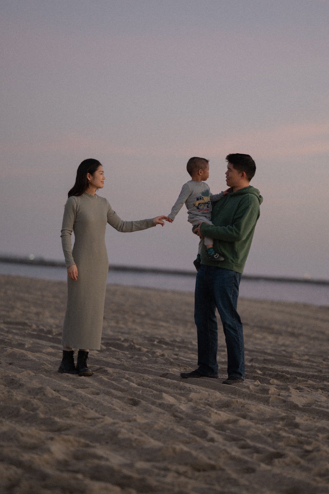
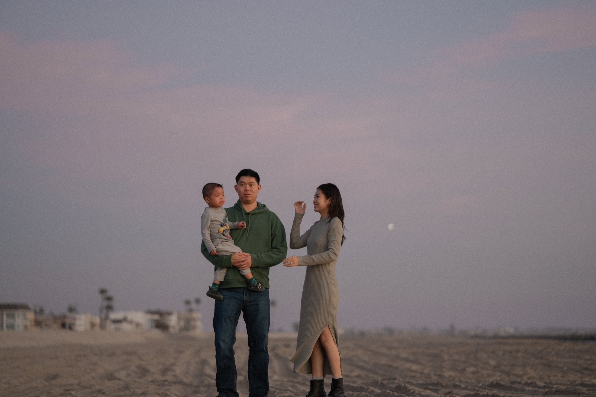
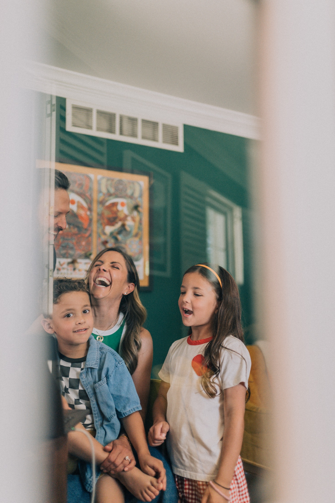
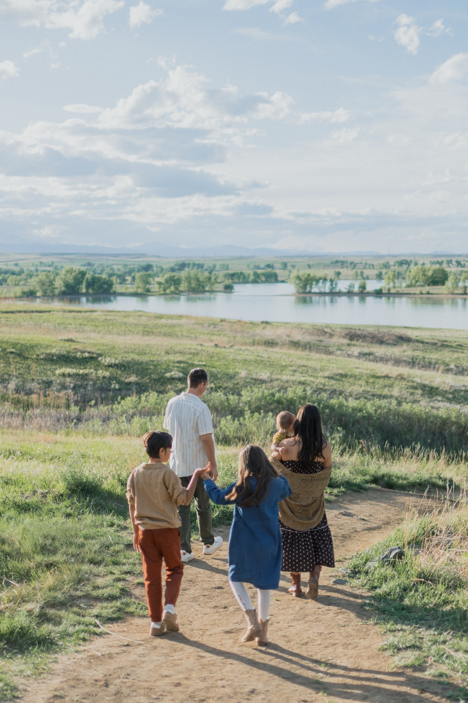
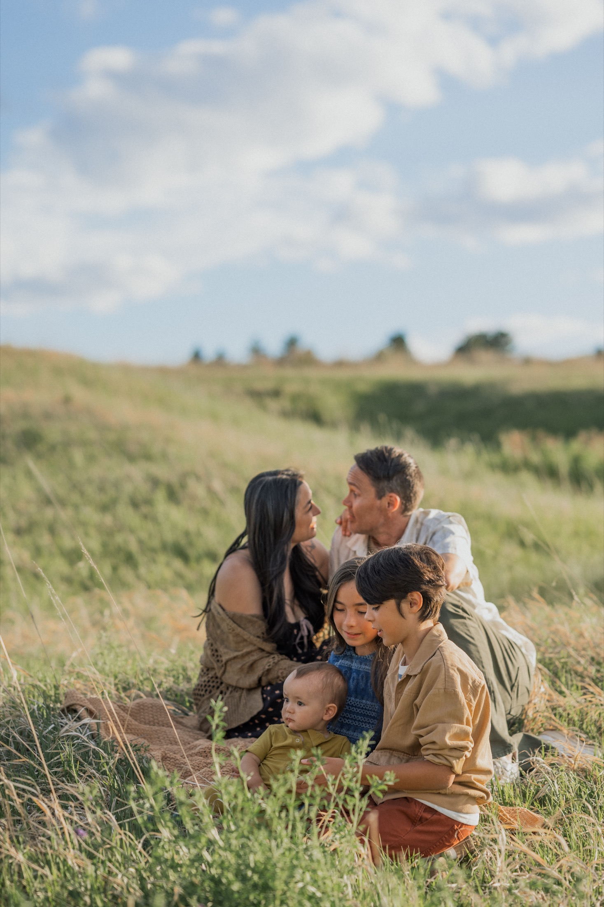
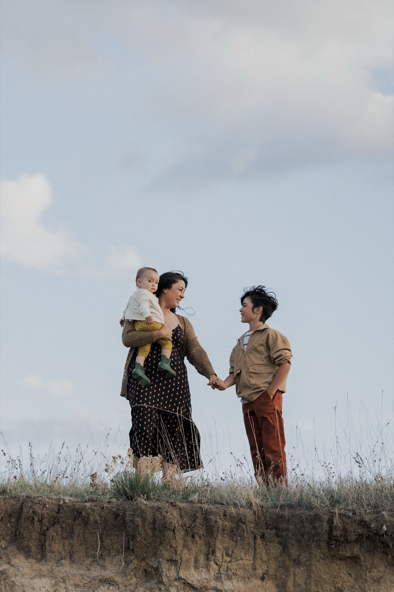

Whether at home or outdoors, my family sessions are centered around connection rather than perfection. Some stories unfold on a favorite beach trail, while others happen around the kitchen table, in the living room, or during the routines that make a house feel like home.
I'm drawn to the everyday moments—the laughter, the quiet interactions, and the small details that often go unnoticed while we're living them.